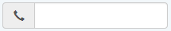
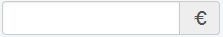
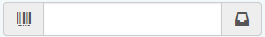
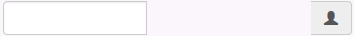

Hérite de WidgetBase
Ce composant est instancié directement pour représenter un champ de type “String” ou “Integer”. Cette classe sert très souvent de classe mère des sous-Widgets liés à un champ (intéraction avec l’utilisateur).
Le template basique de rendu est :
<div class="{sClass}">
<input type="{sDisplayType}" id="{idUnique}" name="{nomField}" value="{valeurField}" maxlength="{tailleMaximum}" style="{sStyle}" />
</div>
Dans le cas de l’utilisation d’options liées à Glyphicon ou FontAwesome le template de rendu est modifier pour utiliser le mécanisme des Input groups de Bootstrap :
<div class="{sClass}">
<div class="input-group" style="width: 100%;">
{sPrefix}
<input type="{sDisplayType}" id="{idUnique}" name="{nomField}" value="{valeurField}" maxlength="{tailleMaximum}" style="{sStyle}" />
{sSuffix}
</div>
Note
La valeur de “maxlength” est déduite :
Le contenu de l’attribut style est une largeur (width) en px est calculé par rapport à au maxlength.
Le contenu de {sPrefix} et {sSuffix} est injecté en fonction des options (glyphicon|fa)_(prefix|suffix) (Voir ci-après). Le template Html injecté est :
<span class="input-group-addon {sIconType} {sIconClass}"></span>
Type : String
Fonction : Indique quel DataSet (résultant d’un DataQuery) est lié au champ, le DataQuery doit être présent dans la partie <data_structure> sans quoi une erreur se produira. Le matching se fait sur l’id du DataQuery
<value dataset="foo" field="bar" />
Type : String
Fonction : Indique quel champ du DataSet est lié au Widget. Si la colonne n’est pas spécifiée dans le DataQuery une erreur se produira.
<value dataset="foo" field="bar" />
Type : String
Valeurs autorisées : ro / rw
Par défaut : ro
Fonction : Indique si le champ est en lecture seule (mode=”ro”) ou en lecture/écriture (mode=”rw”)
Important
L’implémentation du mode ro/rw est fait dans WidgetFactory (TODO lien vers WidgetFactory) dans la méthode GetWidgetName() et non dans WidgetField !
Note
En réalité l’égalité mode == ‘ro’ n’est jamais testé, seule mode == ‘rw’ l’est. Par conséquent tout autre valeur autre que “rw” induira un comportement similaire à mode == ‘ro’.
<value dataset="foo" field="bar" mode="rw" />
Type : Integer
Fonction : Permet de forcer la valeur de l’attriut HTML “size” d’un input de type text.
Note
Même si cette classe (WidgetField) est héritée par beaucoup d’enfants l’attribut size est utilisé uniquement dans cette classe.
<value dataset="foo" field="bar" size="20" />
Type : String
Fonction : Est utilisé en tant que placeholder pour l’élément input de type text
Note
Même si cette classe (WidgetField) est héritée par beaucoup d’enfants l’attribut placeholder est utilisé uniquement dans cette classe.
<value dataset="foo" field="bar" placeholder="Entrez un commentaire" />
Type: string
Fonction: Détermine le type de rendu du champ (Type text, ou Type password)
Valeurs possibles : text ou password
<option output="html" option_name="display_type" value="password" />
Type: string
Fonction : Permet d’injecter une icône au début du champ, renforçant la signification du champ
Valeurs : Une glyphicon depuis la liste fournie par Bootstrap
<option output="html" option_name="glyphicon_prefix" value="glyphicon-earphone" />
Rendu :
Le fonctionnement de cette option est identique à glyphicon_prefix excepté que l’icône est positionnée à droite du champ
<option output="html" option_name="glyphicon_suffix" value="glyphicon-euro" />
Rendu :
Note
Il est possible de cumuler ces deux options afin de placer une icône de préfix et de suffix :
Caution
GSA : Le calcul de la largeur (width) à utiliser pour le champ en fonction de la variable liée au champ est incompatible avec cette option, cela peut conduire à des effets disgracieux :
Pour palier à ce problème la width calculée est “oubliée” afin d’occuper toute la largeur disponible.
Type : string
Fonction : Tout comme l’option glyphicon-prefix cette option permet d’injecter une icône au début du champ.
Valeurs : Une valeur depuis la liste d’icônes de FontAwesome
Le fonctionnement de cette option est identique à fa_prefix excepté que l’icône est positionnée à droite du champ
Indique au moteur de ne pas encadrer le field avec une balise div, cela permet de grouper des fields pour les positionner ensemble, cela évite d’avoir des espaces importants entre fields.
Exemple:
<box class="form-inline col-md-6 col-lg-8">
<value dataset="insured" field="numero_rue" mode="rw" >
<option output="html" option_name="remove_master_div" value="true" />
</value>
<value dataset="insured" field="bis_ter_q" mode="rw">
<option output="html" option_name="remove_master_div" value="true" />
<option output="html" option_name="widget" value="WidgetSelect" />
</value>
<value dataset="insured" field="voie" mode="rw">
<option output="html" option_name="remove_master_div" value="true" />
<option output="html" option_name="widget" value="WidgetSelect" />
</value>
</box>
Rendu:
<div id="vzn53fca5d2037697_51724306" class="vzn-box form-inline col-md-6 col-lg-8">
<input id="vzn53fca5d2037a82_28976634" class="form-control" type="text" style="margin-right:4px;width: 96px;" maxlength="6" value="" name="vzn53fca5d2037a82_28976634">
<select id="vzn53fca5d20380a3_49493125" class="form-control" style="margin-right: 4px;" name="vzn53fca5d20380a3_49493125">
<select id="vzn53fca5d20387b3_65425504" class="form-control" style="margin-right: 4px;" name="vzn53fca5d20387b3_65425504">
</div>
Caution
Pour être supportée, cette option doit être interprétée dans tous les widgets qui implémentent leur propre méthode de rendu (render), actuellement seuls WidgetField et WidgetSelect supportent cette option.